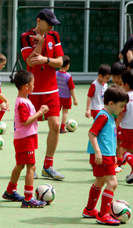

|
 「子供は楽しむ事が一番」という事を念頭に置いたFA（英国サッカー協会）公認の英国人コーチの下、精力的かつ組織的で、非常に楽しい最高のサッカーのトレーニングをBritish Football Academyのメンバーに提供致します。当アカデミーは英語が喋れないお子様も大歓迎で、これまでも沢山のお子様がサッカーだけでなく、英語力も上達させています。British Football Academyは多文化、多様性を信念としており、日本だけでなく世界中の小さなサッカー選手と、世界共通の合言葉である「サッカー」の名の下での交流と学習を可能にしています。 「子供は楽しむ事が一番」という事を念頭に置いたFA（英国サッカー協会）公認の英国人コーチの下、精力的かつ組織的で、非常に楽しい最高のサッカーのトレーニングをBritish Football Academyのメンバーに提供致します。当アカデミーは英語が喋れないお子様も大歓迎で、これまでも沢山のお子様がサッカーだけでなく、英語力も上達させています。British Football Academyは多文化、多様性を信念としており、日本だけでなく世界中の小さなサッカー選手と、世界共通の合言葉である「サッカー」の名の下での交流と学習を可能にしています。
1) 3歳から13歳のお子様ならどなたでもご参加いただけます。参加可能なスクールをお選び下さい。なお、03-3770-0288でもご確認できます。（日本語・英語対応）
2) ご入会前に、トライアル（体験）セッションを提供しております。 フォームに必要項目を記入して体験セッションを申し込み下さい。お申し込み後、予約確認に関してはEメールにてご連絡差し上げます。また、電話でのご予約も承ります。
3) 体験セッションの参加日は、練習開始の10分から15分前には練習場に集合して下さい。（練習時間については、ホームページのここをクリックからご確認できます。）
4) お子様には運動に適した格好をご用意下さい。また、すね当てや練習場に適したシューズのご用意もお願い致します。（各練習場の詳細は、「VENUE」ページにてご確認ください。）
5) 体験セッション後、BFAメンバーガイドを渡します。2回目の体験セッションについては、info@british-football-academy.comまでEメールでご予約のご連絡をください。
6）体験セッション終了後は、コーチに「British Football Academy入会申込資料」についてお問い合わせください。登録用紙に必要事項をご記入の上、お子様のご入会初日にコーチにご提出してください。
7) BFA公式メンバーにはBFAのオフィシャルadidasユニフォーム （シャツ、ショーツ、ソックス）、そしてクラスバッジを渡します。
8) BFAで楽しいサッカーを経験をしよう！
|